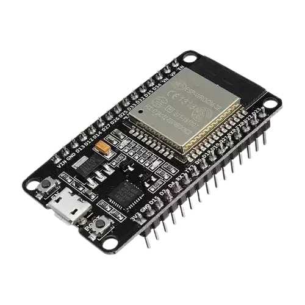
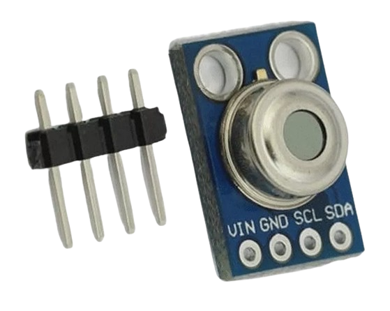
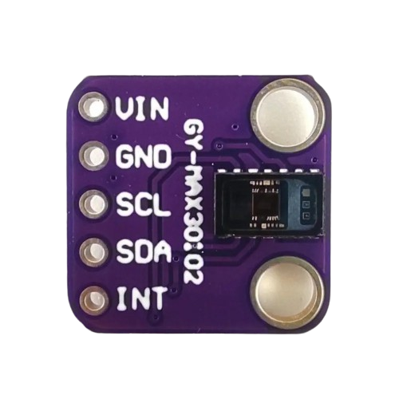

Un Poco Sobre Los Sensores
Aquí encontrarás los sensores utilizados, cada uno integrado a la infraestructura del guante.
El conjunto de estos sensores sirve para la medición de variables biológicas emitidas por el cuerpo, como el pulso, la temperatura y el nivel de oxígeno en la sangre.
ESP32: Este microcontrolador facilita el proceso de recepción de datos y los envía a una computadora para visualización.
MLX90614: Utilizado para medir la temperatura corpora, se encuentra en el dedo indice.
MAX30102: Utilizado para medir el ritmo cardíaco de la persona. Se encuentra colocado en el dedo medio.

ESP32s: Microcontrolador de bajo consumo, con WiFi y Bluetooth integrado.

MLX90614: Sensor de temperatura infrarrojo.

MAX30102: Sensor para detección de oxigeno en la sangre y ritmo cardiaco.